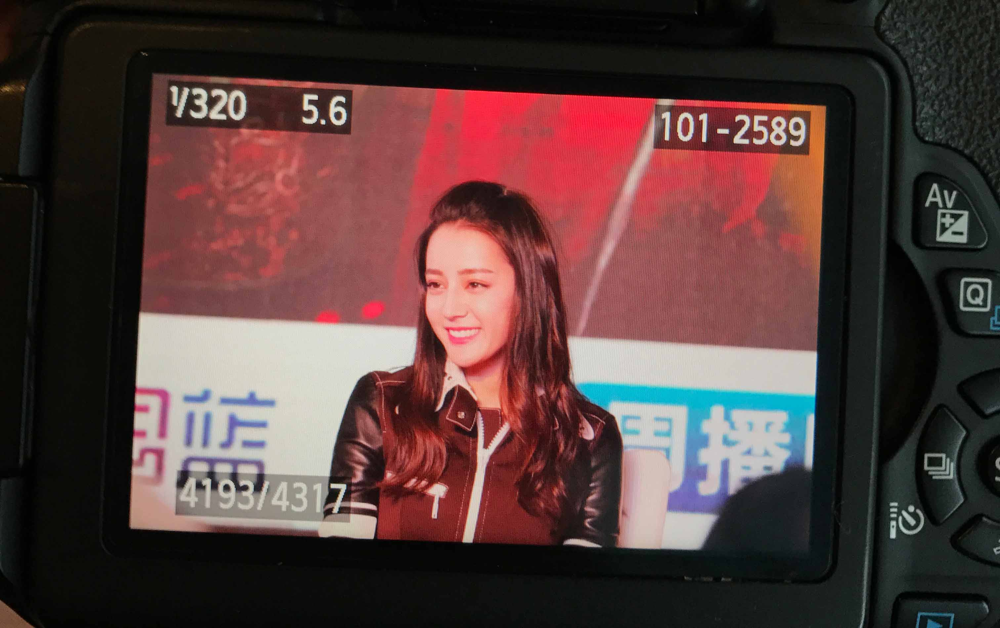
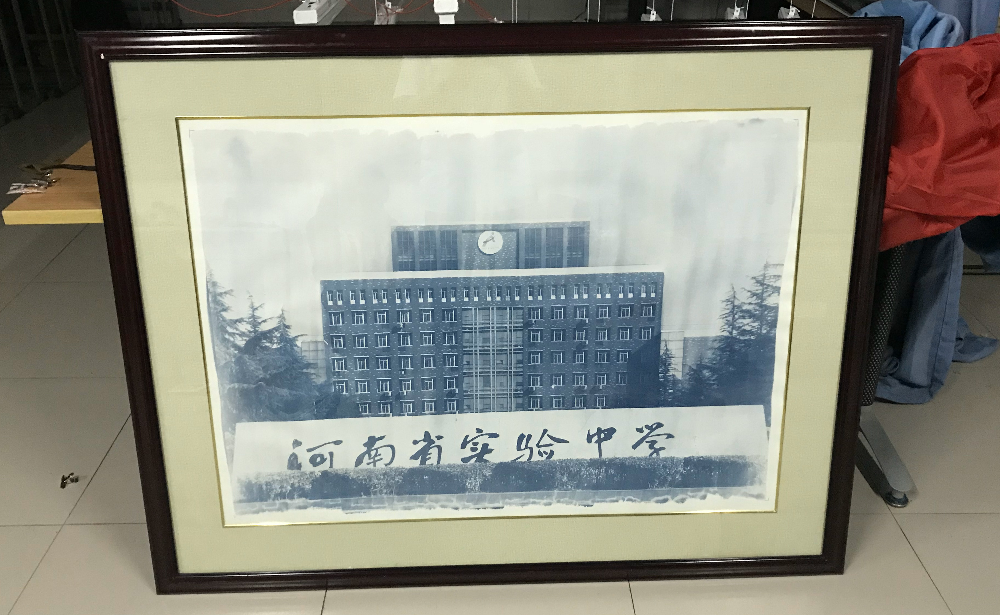

Photography is a technique of using light. I have worked as a commercial photographer to record images of large commercial events. I also founded a photography club with a friend in high school and held several large club events in photography lectures. During this time, I won many awards from the school. Personally, I am especially passionate about classical photography.
"The eye should learn to listen before it looks."
Robert Frank
Commercial Photography

Hangzhou West Lake
